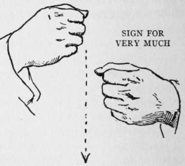
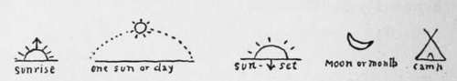
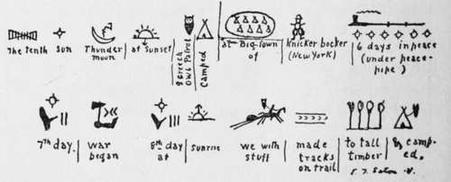
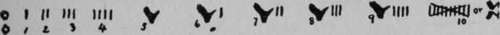
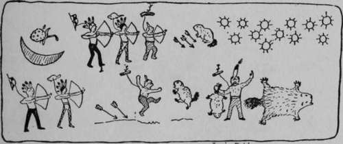
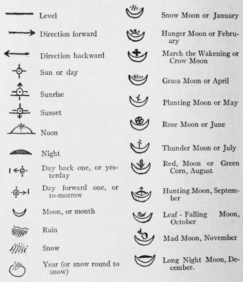
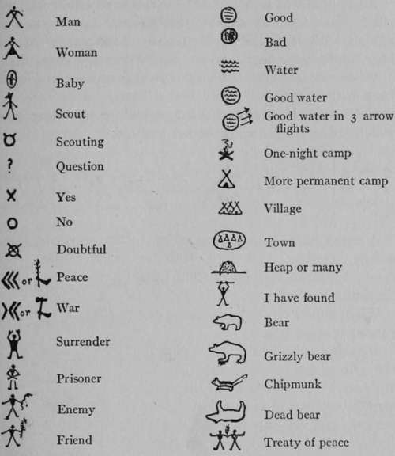
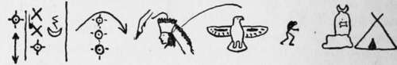
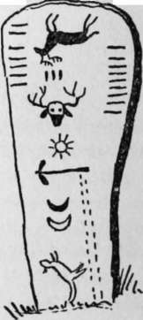

Why Should You Talk The Sign Language?. Continued
Description
This section is from the book "The Book Of Woodcraft", by Ernest Thompson Seton. Also available from Amazon: The Book of Woodcraft.
Why Should You Talk The Sign Language?. Continued
The Indian had much use for certain signs in describing the white trader. The first was: Liar. Close the right hand except the first and second fingers; these are straight and spread; bring the knuckles of the first finger to the mouth, then pass it down forward to the left, meaning double or forked tongue.
The second sign, meaning "very" or "very much," is made by striking the right fist down past the knuckles of the left without quite touching them, the left being held still.
Another useful sign is time. This is made by drawing a circle with the right forefinger on the back of the left wrist. It looks like a reference to the wrist watch, but it is certainly much older than that style of timepiece and probably refers to the shadow of a tree. Some prefer to draw the circle on the left palm as it is held up facing forward.
If you wish to ask, "What time is it?" You make the signs Question, then Time. If the answer is " Three o'clock," you would signal:
Time and hold up three fingers of the right hand.
Hours are shown by laying the right forefinger as a pointer on the flat palm of the left and carrying it once around; minutes by moving the pointer a very little to the left.
If you wish to signal in answer 3:15. You give the signs for hours 3 and minutes 15. Holding all ten fingers up for 10, then those of one hand for 5.
It takes a good-sized dictionary to give all the signs in use, and a dictionary you must have, if you would become an expert.
I shall conclude with one pretty little Indian sign: First, give the Question sign, then make an incomplete ring of your right forefinger and thumb, raise them in a sweep until above your head, then bring the ring straight down to your heart. This is the Indian way of asking, "Is the sun shining in your heart?" - that is, "Are you happy?" - your answer will, I hope, be made by the right hand and arm standing up straight, then bowing toward the left, followed by a sharp stroke of the right fist knuckles past those of the left fist without their touching, which means "Yes, the sun shines in my heart heap strong".
Picture. Writing
The written form of Sign Language is the picture-writing also called Pictography, and Ideography, because it represents ideas and not words or letters. It is widely believed that Sign Language is the oldest of all languages; that indeed it existed among animals before man appeared on earth. It is universally accepted that the ideography is the oldest of all writing. The Chinese writing for instance is merely picture-writing done with as few lines as possible.
Thus, their curious character for "Hearing" was once a complete picture of a person listening behind a screen, but in time it was reduced by hasty hands to a few scratches; and "War," now a few spider marks, was originally a sketch of "two women in one house".
To come a little nearer home, our alphabet is said to be descended from hieroglyphic ideographs.
"A" or "Ah," for example, was the sound of an ox represented first by an outline of an ox, then of the head, which in various modifications, through rapid writing, became our "A".
"O" was a face saying "Oh," now simplified into the round shape of the mouth.
"S" was a serpent hissing. It is but little changed today.
We may also record our Sign Language in picture-writing, as was the custom of many Indian tribes, and we shall find it worth while for several reasons: It is the Indian special writing; it is picturesque and useful for decoration; and it can be read by any Indian no matter what language he speaks. Indeed, I think it probable that a pictograph inscription dug up 10,000 years from now would be read, whether our language was understood or not. When the French Government set up the Obelisk of Luxor in Paris and wished to inscribe it for all time, they made the record, not in French or Latin, but in pictographs.
Some Indian Scout Photographs.
It is,moreover,part of my method to take the boy through the stages of our race development, just as the young bird must run for a send-off, before it flies, so pictography being its earliest form is the natural first step to writing.
In general, picture writing aims to give on paper the idea of the Sign Language without first turning it into sounds. In the dictionary of Sign Language I give the written form after each of the signs that has a well established or possible symbol. Many of these are drawn from the Indians who were among the best scouts and above all noted for their use of the picture-writing. A few of them will serve to illustrate.
Numbers were originally fingers held up, and five was the whole hand, while ten was a double hand. We can see traces of this origin in the Roman style of numeration.
A one-night camp, a more permanent camp, a village and a town are shown in legible symbols.
An enemy, sometimes expressed as a " snake," recalls our own "snake in the grass." A "friend," was a man with a branch of a tree; because this was commonly used as a flag of truce and had indeed the same meaning as our olive branch. The "treaty" is easily read; it was a pair of figures like this done in Wampum that recorded Penn's Treaty. "Good" is sometimes given as a circle full of lines all straight and level, and for "bad" they are crooked and contrary. The wavy lines stood for water, so good water is clearly indicated. The three arrows added mean that at three arrow flights in that direction, that is a quarter mile, there is good water. If there was but one arrow and it pointed straight down that meant "good water here," if it pointed down and outward it meant "good water at a little distance." If the arrow was raised to carry far, it meant good "water a long way off there." This sign was of the greatest value in the dry country of the southwest. Most Indian lodges were decorated with pictographs depicting in some cases the owner's adventures, at other times his prayers for good luck or happy dreams.
The picture on the teepee lining, to record Guy's Exploit.
The old Indian sign for peace, three angles all pointing one way that is "agreed," contrasts naturally with the "war" or "trouble" sign, in which they are going different ways or against each other.
An animal was represented by a crude sketch in which its chief character was shown, thus chipmunk was a small animal with long tail and stripes. Bear was an outline bear, but grizzly bear, had the claws greatly exaggerated.
When the animal was killed, it was represented on its back with legs up.
Each chief, warrior and scout had a totem, a drawing of which stood for his name or for himself.
A man's name is expressed by his totem; thus, the above means, To-day, 20th Sun Thunder Moon. After three days "Deerfoot," Chief of the Flying Eagles, comes to our Standing Rock Camp.
When a man was dead officially or actually, his totem was turned bottom up.
Here is a copy of the inscription found by Schoolcraft on the grave post of Wabojeeg, or white Fisher, a famous Ojibwa chief. He was of the Caribou clan. On the top is his clan totem reversed, and on the bottom the White Fisher; the seven marks on the left were war parties he led.
The three marks in the middle are for wounds.
The moose head is to record a desperate fight he had with a bull moose, while his success in war and in peace are also stated.
This inscription could be read only by those knowing the story, and is rather as a memory help than an exact record.

Continue to:
Tags
bookdome.com, books, online, free, old, antique, new, read, browse, download